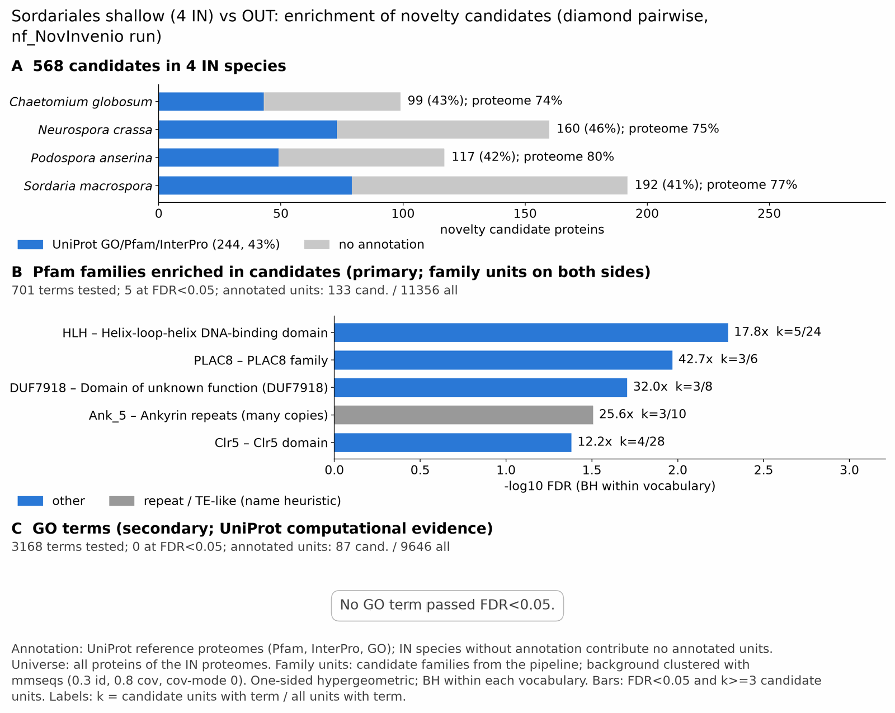

sordariales shallow: functional enrichment (novelty)
One-sided hypergeometric test per term; Benjamini-Hochberg FDR within each scope, level and vocabulary. Candidates are the novelty candidates: gene families present in the IN group and absent from the OUT group. Universe: proteome. Background clustered: True (40773 sequences in 20007 clusters, mmseqs easy-cluster --min-seq-id 0.3 -c 0.8). Family level: one unit per candidate family and per background cluster.
Sources: Pfam: 2026-01-27-Pfam38.2; InterPro entries: 110.0; GO: releases/2026-07-26; analysis generated 2026-10-12T18:42:43. Source tables: studies/fungi/sordariales_shallow/analysis/enrichment/outputs/proteome_clustered.
Full record: PROVENANCE. Run report: report.html.
- Annotation provenance is not fully recorded: PROVENANCE.yaml lists the per-species annotation files and their checksums, but not the UniProt release they come from.
- GO results are secondary. GO annotations include computational evidence (IEA, IBA); the GO evidence column shows if a term has non-IEA support.
- Candidate families (pipeline clustering of candidates) and background clusters (mmseqs clustering of the background proteome) are made by different runs, so family-level counts are not fully comparable.
- Low annotation: the candidate set has less than 50% annotation for Pfam 32.2%, InterPro 41.9%, GO 19.9%, any vocabulary 43.0%. Enrichment for these vocabularies has low power.
Summary figure

Annotation coverage
Fraction of proteins with at least one term per vocabulary. Universe = all proteins of the species; candidates = the candidate set.
| Species | Set | Proteins | Pfam | Pfam clan | InterPro | GO | Any |
|---|---|---|---|---|---|---|---|
| Chaeglob | universe | 11036 | 67.6% | 55.3% | 73.9% | 59.0% | 74.3% |
| Chaeglob | candidates | 99 | 33.3% | 19.2% | 42.4% | 22.2% | 43.4% |
| Neurcras | universe | 9759 | 69.3% | 54.9% | 73.9% | 62.6% | 74.6% |
| Neurcras | candidates | 160 | 33.1% | 23.1% | 44.4% | 22.5% | 45.6% |
| Podoanse | universe | 10656 | 73.7% | 58.6% | 79.5% | 63.3% | 79.8% |
| Podoanse | candidates | 117 | 32.5% | 24.8% | 41.0% | 16.2% | 41.9% |
| Sordmacr | universe | 9890 | 70.7% | 56.1% | 76.3% | 63.0% | 76.6% |
| Sordmacr | candidates | 192 | 30.7% | 19.8% | 40.1% | 18.8% | 41.1% |
| ALL_IN | universe | 41341 | 70.3% | 56.2% | 75.9% | 61.9% | 76.3% |
| ALL_IN | candidates | 568 | 32.2% | 21.6% | 41.9% | 19.9% | 43.0% |
Tests summary
Per vocabulary: terms with FDR < 0.05 / terms tested. Protein level counts proteins; family level counts candidate families and background clusters.
| Scope | Level | Cand. units | Pfam sig / tested | Pfam clan sig / tested | InterPro sig / tested | GO sig / tested |
|---|---|---|---|---|---|---|
| whole_set | family | 411 | 5 / 701 | 2 / 294 | 11 / 1484 | 0 / 3168 |
| whole_set | protein | 568 | 14 / 1739 | 11 / 423 | 27 / 3767 | 4 / 4898 |
| Chaeglob | family | 97 | 0 / 376 | 0 / 239 | 0 / 872 | 0 / 2391 |
| Chaeglob | protein | 99 | 0 / 416 | 0 / 246 | 0 / 978 | 0 / 2475 |
| Neurcras | family | 159 | 1 / 302 | 1 / 237 | 0 / 757 | 0 / 2545 |
| Neurcras | protein | 160 | 1 / 367 | 2 / 246 | 0 / 908 | 0 / 2632 |
| Podoanse | family | 117 | 0 / 362 | 0 / 246 | 0 / 866 | 0 / 2151 |
| Podoanse | protein | 117 | 0 / 446 | 0 / 260 | 0 / 1054 | 0 / 2290 |
| Sordmacr | family | 189 | 0 / 317 | 0 / 240 | 0 / 801 | 0 / 2461 |
| Sordmacr | protein | 192 | 0 / 375 | 0 / 250 | 0 / 933 | 0 / 2547 |
Top 25 Pfam terms (whole set, family level)
25 rows shown, ordered by FDR then p-value; 5 have FDR < 0.05 (bold).
| Term | Name | k / N cand. | n / M bg | Fold | FDR (BH) |
|---|---|---|---|---|---|
| PF00010 | HLH: Helix-loop-helix DNA-binding domain | 5 / 133 | 24 / 11356 | 17.788 | 0.005 |
| PF04749 | PLAC8: PLAC8 family | 3 / 133 | 6 / 11356 | 42.692 | 0.011 |
| PF25534 | DUF7918: Domain of unknown function (DUF7918) | 3 / 133 | 8 / 11356 | 32.019 | 0.020 |
| PF13857 | Ank_5: Ankyrin repeats (many copies) | 3 / 133 | 10 / 11356 | 25.615 | 0.031 |
| PF14420 | Clr5: Clr5 domain | 4 / 133 | 28 / 11356 | 12.198 | 0.042 |
| PF05730 | CFEM: CFEM domain | 4 / 133 | 37 / 11356 | 9.231 | 0.103 |
| PF10346 | Con-6: Conidiation protein 6 | 2 / 133 | 5 / 11356 | 34.153 | 0.133 |
| PF30957 | HAC6_N: HAC6 N-terminal domain | 2 / 133 | 6 / 11356 | 28.461 | 0.174 |
| PF10342 | Kre9_KNH: Kre9/KNH-like N-terminal Ig-like domain | 2 / 133 | 8 / 11356 | 21.346 | 0.273 |
| PF00961 | LAGLIDADG_1: LAGLIDADG endonuclease | 3 / 133 | 29 / 11356 | 8.833 | 0.273 |
| PF01822 | WSC: WSC domain | 3 / 133 | 29 / 11356 | 8.833 | 0.273 |
| PF20150 | 2EXR: 2EXR family | 4 / 133 | 58 / 11356 | 5.889 | 0.273 |
| PF25597 | SH3_retrovirus: Retroviral polymerase SH3-like domain | 2 / 133 | 10 / 11356 | 17.077 | 0.311 |
| PF02037 | SAP: SAP domain | 2 / 133 | 11 / 11356 | 15.524 | 0.350 |
| PF12224 | Amidoligase_2: Putative amidoligase enzyme | 2 / 133 | 12 / 11356 | 14.231 | 0.389 |
| PF01541 | GIY-YIG: GIY-YIG catalytic domain | 2 / 133 | 13 / 11356 | 13.136 | 0.402 |
| PF07453 | NUMOD1: NUMOD1 domain | 2 / 133 | 13 / 11356 | 13.136 | 0.402 |
| PF12796 | Ank_2: Ankyrin repeats (3 copies) | 6 / 133 | 175 / 11356 | 2.927 | 0.658 |
| PF00651 | BTB: BTB/POZ domain | 2 / 133 | 23 / 11356 | 7.425 | 1.000 |
| PF00505 | HMG_box: HMG (high mobility group) box | 2 / 133 | 24 / 11356 | 7.115 | 1.000 |
| PF14856 | Hce2: Pathogen effector; putative necrosis-inducing factor | 2 / 133 | 26 / 11356 | 6.568 | 1.000 |
| PF22936 | Pol_BBD: Pol polyprotein, beta-barrel domain | 1 / 133 | 5 / 11356 | 17.077 | 1.000 |
| PF27653 | SPOK2_N: Spore killer 2 N-terminal domain | 1 / 133 | 5 / 11356 | 17.077 | 1.000 |
| PF11578 | DUF3237: Protein of unknown function (DUF3237) | 1 / 133 | 6 / 11356 | 14.231 | 1.000 |
| PF14295 | PAN_4: PAN domain | 1 / 133 | 6 / 11356 | 14.231 | 1.000 |
Top 25 InterPro terms (whole set, family level)
25 rows shown, ordered by FDR then p-value; 11 have FDR < 0.05 (bold).
| Term | Name | k / N cand. | n / M bg | Fold | FDR (BH) |
|---|---|---|---|---|---|
| IPR011598 | Domain:Myc-type, basic helix-loop-helix (bHLH) domain | 6 / 177 | 28 / 12683 | 15.355 | 0.003 |
| IPR036638 | Homologous_superfamily:Helix-loop-helix DNA-binding domain superfamily | 6 / 177 | 31 / 12683 | 13.869 | 0.003 |
| IPR006350 | Family:Intron endonuclease, group I | 4 / 177 | 11 / 12683 | 26.056 | 0.006 |
| IPR051637 | 3 / 177 | 5 / 12683 | 42.993 | 0.010 | |
| IPR000210 | Domain:BTB/POZ domain | 5 / 177 | 29 / 12683 | 12.354 | 0.010 |
| IPR006461 | Family:PLAC8 motif-containing protein | 3 / 177 | 6 / 12683 | 35.828 | 0.010 |
| IPR011333 | Homologous_superfamily:SKP1/BTB/POZ domain superfamily | 6 / 177 | 49 / 12683 | 8.774 | 0.010 |
| IPR000305 | Domain:GIY-YIG endonuclease | 4 / 177 | 16 / 12683 | 17.914 | 0.010 |
| IPR035901 | Homologous_superfamily:GIY-YIG endonuclease superfamily | 4 / 177 | 16 / 12683 | 17.914 | 0.010 |
| IPR003611 | Domain:Nuclease associated modular domain 3 | 3 / 177 | 8 / 12683 | 26.871 | 0.019 |
| IPR057678 | Domain:Domain of unknown function DUF7918 | 3 / 177 | 8 / 12683 | 26.871 | 0.019 |
| IPR052099 | Family:Diverse Regulatory Transcription Factors | 3 / 177 | 11 / 12683 | 19.542 | 0.050 |
| IPR025676 | Domain:Clr5 domain | 4 / 177 | 28 / 12683 | 10.236 | 0.066 |
| IPR011009 | Homologous_superfamily:Protein kinase-like domain superfamily | 13 / 177 | 345 / 12683 | 2.7 | 0.117 |
| IPR008427 | Domain:Extracellular membrane protein, CFEM domain | 4 / 177 | 37 / 12683 | 7.747 | 0.155 |
| IPR051735 | 3 / 177 | 18 / 12683 | 11.943 | 0.155 | |
| IPR018824 | Family:Conidiation-specific protein 6 | 2 / 177 | 5 / 12683 | 28.662 | 0.155 |
| IPR052670 | Family:UPF0654 domain-containing protein | 2 / 177 | 5 / 12683 | 28.662 | 0.155 |
| IPR063679 | Domain:HAC6, N-terminal domain | 2 / 177 | 6 / 12683 | 23.885 | 0.219 |
| IPR051289 | 3 / 177 | 21 / 12683 | 10.236 | 0.219 | |
| IPR018466 | Domain:Cell wall synthesis protein KRE9/Knh1-like, N-terminal | 2 / 177 | 8 / 12683 | 17.914 | 0.363 |
| IPR036361 | Homologous_superfamily:SAP domain superfamily | 2 / 177 | 9 / 12683 | 15.923 | 0.441 |
| IPR036770 | Homologous_superfamily:Ankyrin repeat-containing domain superfamily | 9 / 177 | 242 / 12683 | 2.665 | 0.446 |
| IPR057670 | Domain:Retroviral polymerase, SH3-like domain | 2 / 177 | 10 / 12683 | 14.331 | 0.478 |
| IPR004860 | Domain:Homing endonuclease, LAGLIDADG domain | 3 / 177 | 30 / 12683 | 7.166 | 0.478 |
Top 15 GO terms (whole set, family level) — secondary, computational evidence (IEA/IBA) included
15 rows shown, ordered by FDR then p-value; 0 have FDR < 0.05 (bold).
| Term | Name | k / N cand. | n / M bg | Fold | FDR (BH) | GO evidence | Families with non-IEA |
|---|---|---|---|---|---|---|---|
| GO:0004519 | molecular_function:endonuclease activity | 8 / 87 | 162 / 9646 | 5.475 | 0.320 | IEA_only | 0 |
| GO:0019369 | biological_process:arachidonate metabolic process | 3 / 87 | 17 / 9646 | 19.566 | 0.329 | has_non_IEA | 1 |
| GO:0006690 | biological_process:icosanoid metabolic process | 3 / 87 | 18 / 9646 | 18.479 | 0.329 | has_non_IEA | 1 |
| GO:0120254 | biological_process:olefinic compound metabolic process | 3 / 87 | 18 / 9646 | 18.479 | 0.329 | has_non_IEA | 1 |
| GO:0004518 | molecular_function:nuclease activity | 8 / 87 | 214 / 9646 | 4.145 | 0.329 | IEA_only | 0 |
| GO:0033559 | biological_process:unsaturated fatty acid metabolic process | 3 / 87 | 20 / 9646 | 16.631 | 0.329 | has_non_IEA | 1 |
| GO:0046983 | molecular_function:protein dimerization activity | 6 / 87 | 120 / 9646 | 5.544 | 0.329 | IEA_only | 0 |
| GO:0001676 | biological_process:long-chain fatty acid metabolic process | 3 / 87 | 26 / 9646 | 12.793 | 0.628 | has_non_IEA | 1 |
| GO:0004672 | molecular_function:protein kinase activity | 8 / 87 | 261 / 9646 | 3.398 | 0.838 | has_non_IEA | 2 |
| GO:0031145 | biological_process:anaphase-promoting complex-dependent catabolic process | 2 / 87 | 19 / 9646 | 11.671 | 1.000 | IEA_only | 0 |
| GO:0016773 | molecular_function:phosphotransferase activity, alcohol group as acceptor | 8 / 87 | 350 / 9646 | 2.534 | 1.000 | has_non_IEA | 2 |
| GO:0005680 | cellular_component:anaphase-promoting complex | 2 / 87 | 22 / 9646 | 10.079 | 1.000 | IEA_only | 0 |
| GO:0016301 | molecular_function:kinase activity | 8 / 87 | 366 / 9646 | 2.423 | 1.000 | has_non_IEA | 2 |
| GO:0030515 | molecular_function:snoRNA binding | 2 / 87 | 24 / 9646 | 9.239 | 1.000 | IEA_only | 0 |
| GO:0005576 | cellular_component:extracellular region | 6 / 87 | 243 / 9646 | 2.738 | 1.000 | has_non_IEA | 2 |
Actin cytoskeleton controls
Known actin-related families and how many of their proteins pass each filter. Protein ID columns are left out.
| control | pfam_ids | desc_regex | IN_universe | IN_in_matrix | IN_pass_ingroup_rule | candidates | near_miss_out1 | near_miss_out2 | n_Chaeglob | n_Neurcras | n_Podoanse | n_Sordmacr | n_Clonrose | n_Collhigg | n_Conilign | n_Cordmili | n_Cryppara | n_Eutylata | n_Metaanis | n_Vertdahl |
|---|---|---|---|---|---|---|---|---|---|---|---|---|---|---|---|---|---|---|---|---|
| Arp2/3 ARPC2 (P34-Arc) | PF04045 | 4 | 4 | 4 | 0 | 0 | 0 | 1 | 1 | 1 | 1 | 1 | 1 | 1 | 1 | 1 | 1 | 1 | 1 | |
| Arp2/3 ARPC3 (P21-Arc) | PF04062 | 4 | 4 | 4 | 0 | 0 | 0 | 1 | 1 | 1 | 1 | 1 | 1 | 1 | 1 | 1 | 1 | 1 | 1 | |
| Arp2/3 ARPC4 | PF05856 | 4 | 4 | 4 | 0 | 0 | 0 | 1 | 1 | 1 | 1 | 1 | 1 | 1 | 1 | 1 | 1 | 1 | 0 | |
| Arp2/3 ARPC5 (P16-Arc) | PF04699 | 4 | 4 | 4 | 0 | 0 | 0 | 1 | 1 | 1 | 1 | 1 | 1 | 1 | 1 | 1 | 1 | 1 | 1 | |
| Arp2/3 ARPC1 (description only) | arp2/3 complex.*(41|p41|subunit 1)|ARPC1 | 0 | 0 | 0 | 0 | 0 | 0 | 0 | 0 | 0 | 0 | 0 | 0 | 0 | 0 | 0 | 0 | 0 | 0 | |
| Arp2 / Arp3 (description only) | actin-related protein (2|3)\b|\bARP[23]\b | 26 | 26 | 26 | 0 | 0 | 0 | 7 | 6 | 7 | 6 | 6 | 6 | 6 | 7 | 6 | 6 | 84 | 6 | |
| WAVE complex NCKAP1 | PF09735 | 0 | 0 | 0 | 0 | 0 | 0 | 0 | 0 | 0 | 0 | 0 | 0 | 0 | 0 | 0 | 0 | 0 | 0 | |
| WAVE complex CYFIP (FragX_IP) | PF05994 | 0 | 0 | 0 | 0 | 0 | 0 | 0 | 0 | 0 | 0 | 0 | 0 | 0 | 0 | 0 | 0 | 0 | 0 | |
| WAVE complex ABI | PF07815|PF27594 | 0 | 0 | 0 | 0 | 0 | 0 | 0 | 0 | 0 | 0 | 0 | 0 | 0 | 0 | 0 | 0 | 0 | 0 | |
| SCAR/WAVE (SCAR_helical) | PF27569 | 0 | 0 | 0 | 0 | 0 | 0 | 0 | 0 | 0 | 0 | 0 | 0 | 0 | 0 | 0 | 0 | 0 | 0 | |
| WASP family (WH1) | PF00568 | 4 | 4 | 4 | 0 | 0 | 0 | 1 | 1 | 1 | 1 | 2 | 1 | 1 | 1 | 0 | 0 | 1 | 1 | |
| WH2 motif (WASP, WAVE, others) | PF02205 | 6 | 6 | 6 | 0 | 0 | 0 | 2 | 1 | 2 | 1 | 2 | 2 | 1 | 1 | 0 | 1 | 1 | 1 | |
| Formin FH2 | PF02181 | 4 | 4 | 4 | 0 | 0 | 0 | 1 | 1 | 1 | 1 | 1 | 1 | 1 | 1 | 0 | 1 | 1 | 0 | |
| Formin Drf_GBD / Drf_FH3 / Drf_DAD | PF06371|PF06367|PF06345 | 6 | 6 | 6 | 0 | 0 | 0 | 1 | 2 | 2 | 1 | 2 | 2 | 2 | 2 | 0 | 2 | 1 | 1 | |
| Ena/VASP (VASP_tetra) | PF08776 | 0 | 0 | 0 | 0 | 0 | 0 | 0 | 0 | 0 | 0 | 0 | 0 | 0 | 0 | 0 | 0 | 0 | 0 | |
| Coronin (description only) | coronin | 4 | 4 | 4 | 0 | 0 | 0 | 1 | 1 | 1 | 1 | 1 | 0 | 1 | 1 | 1 | 1 | 1 | 1 | |
| Cortactin (HS1_rep) | PF02218 | 0 | 0 | 0 | 0 | 0 | 0 | 0 | 0 | 0 | 0 | 0 | 0 | 0 | 0 | 0 | 0 | 0 | 0 | |
| Myosin 2 tail (Myosin_tail_1) | PF01576 | 0 | 0 | 0 | 0 | 0 | 0 | 0 | 0 | 0 | 0 | 1 | 0 | 0 | 0 | 0 | 0 | 0 | 0 | |
| Myosin head (all myosins) | PF00063 | 15 | 15 | 15 | 0 | 0 | 0 | 3 | 4 | 4 | 4 | 4 | 4 | 4 | 4 | 3 | 4 | 4 | 3 |
Page written by bin/generate_enrichment_page.py.